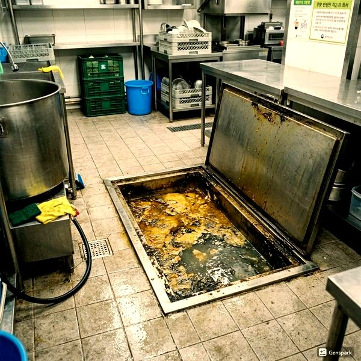
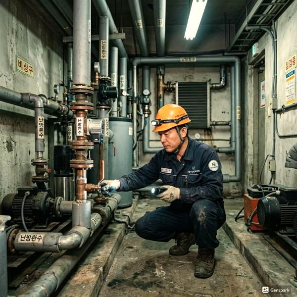
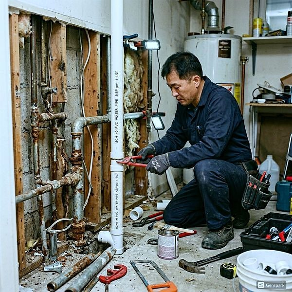

음식점 그리스트랩 청소 주기와 관리법 완벽 가이드
2026년 4월 12일 | 제우스시설관리

음식점을 운영하는 사업주에게 그리스트랩 관리는 필수입니다. 그리스트랩은 조리 과정에서 발생하는 기름과 음식물 찌꺼기를 걸러내는 장치로, 정기적인 청소를 하지 않으면 하수구 역류와 악취의 원인이 됩니다.
그리스트랩 청소 주기는 매장의 조리량에 따라 다릅니다. 일반 음식점은 월 2회, 튀김이나 중식 등 기름 사용량이 많은 매장은 주 1회 청소가 권장됩니다. 방치하면 배관 내부에 기름때가 고착되어 전문 장비 없이는 제거가 불가능해집니다.

제우스시설관리는 고압세척기(150bar 이상)로 그리스트랩 내부와 연결 배관을 완벽하게 청소합니다. 고압세척은 배관 벽면에 붙은 기름때를 물리적으로 제거하는 가장 효과적인 방법입니다. 청소 후에는 내시경 카메라로 배관 내부 상태를 확인하여 잔여 오물이 없는지 점검합니다.
그리스트랩을 방치하면 환경부 과태료 대상이 됩니다. 수질 및 수생태계 보전에 관한 법률에 따라 기름이 하수도로 직접 유입되면 최대 300만원의 과태료가 부과될 수 있습니다. 정기적인 관리는 법적 의무이자 매장 위생의 기본입니다.

제우스시설관리는 음식점 전용 정기관리 서비스를 제공합니다. 월정액 계약으로 그리스트랩, 배관, 배수구를 종합적으로 관리하며 28분 내 긴급출동도 가능합니다. 전화 한 통이면 깨끗한 영업 환경을 유지할 수 있습니다.